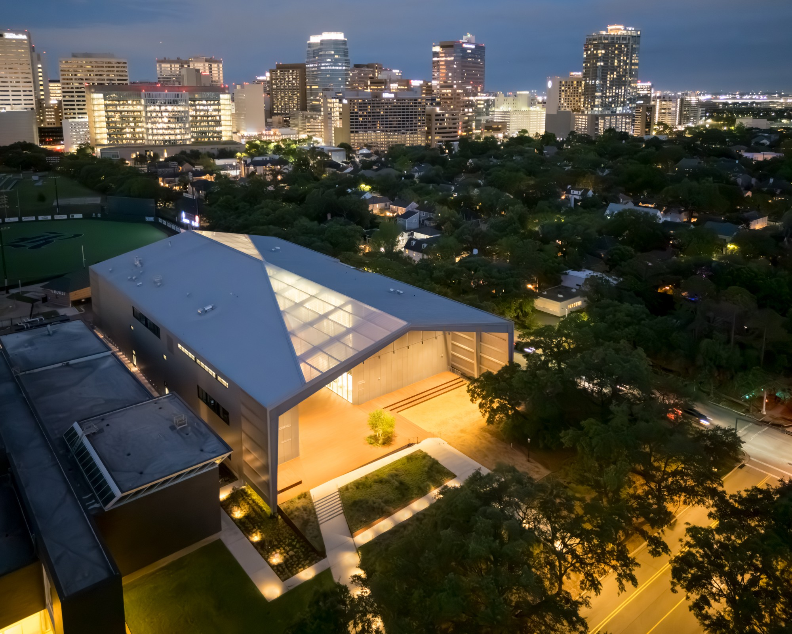
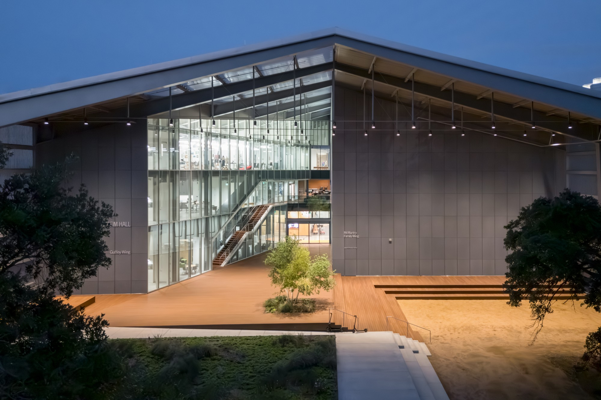
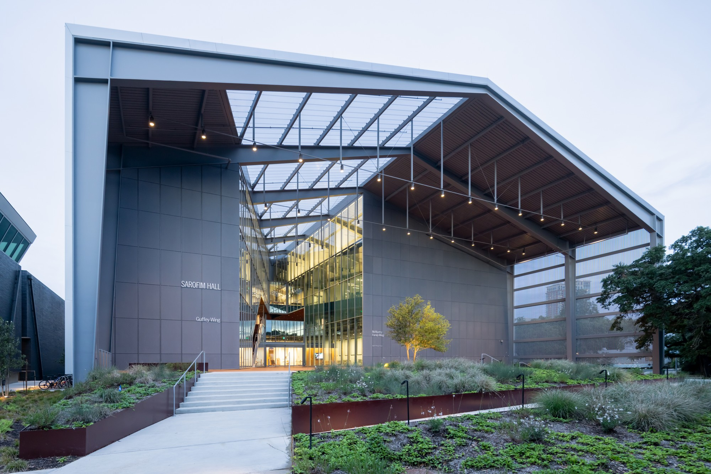
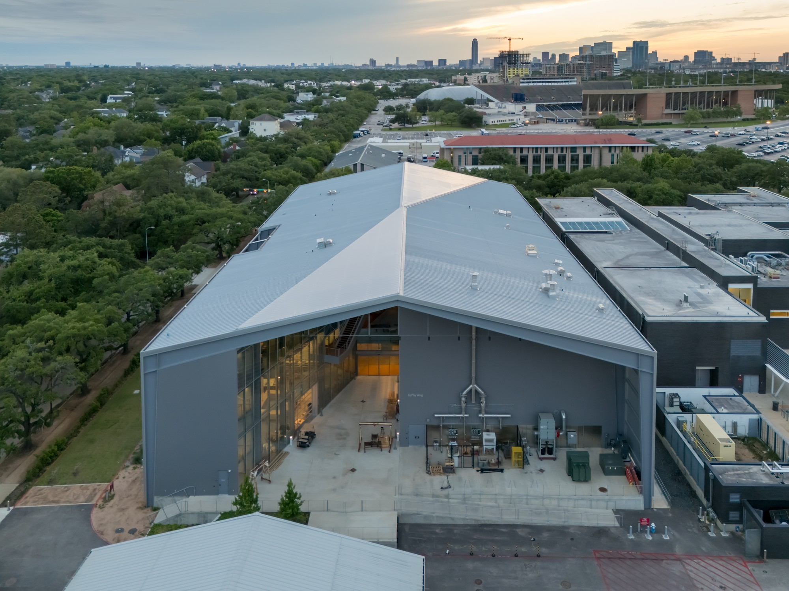
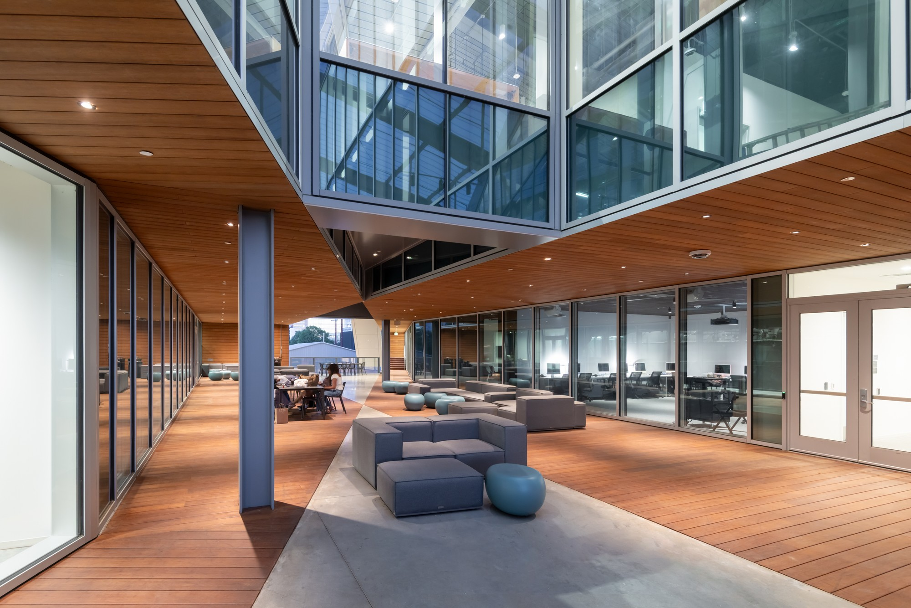
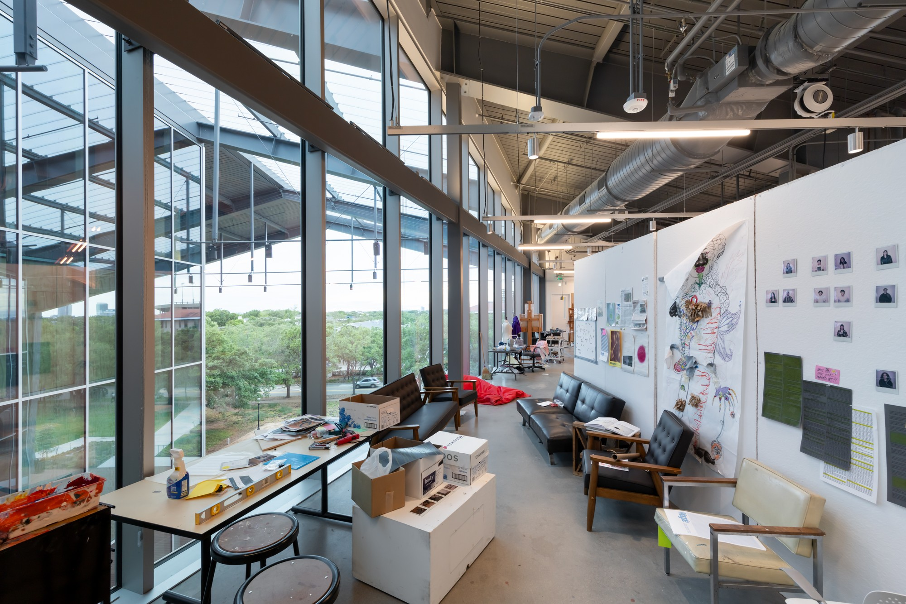
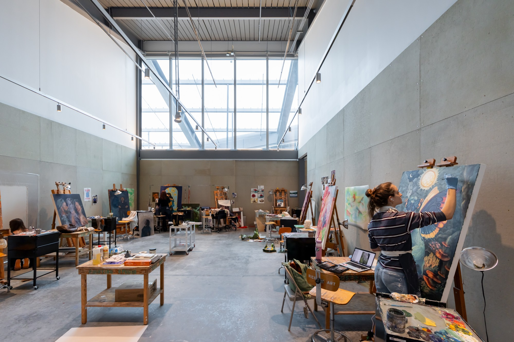
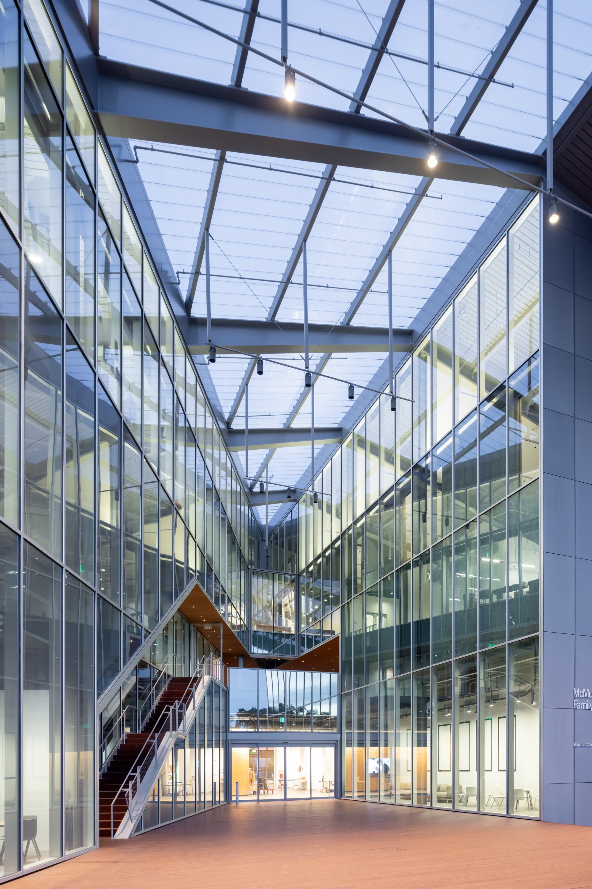

sarofim
hallrice university
A new home for the arts at Rice University, Sarofim Hall serves as a gateway to campus from the Houston Medical Center and southwest Houston. The project supports Rice University's goal of uniting its visual arts programs by establishing a single, state-of-the-art facility that fosters cross-disciplinary collaboration, transparency, and public engagement.

Sarofim Hall reinterprets the industrial Butler building typology. This pre-engineered steel-frame structure housed the former Rice University Art Barn and Media Center on the same site and is ubiquitous across the Texan landscape. The hermetic Butler building — typically a sealed, windowless shed built for warehouse functions — is reimagined as an extroverted mini-campus conducive to contemporary art production and presentation. By slicing through the building volume and freeing the steel frame, the design creates a loft-like, largely column-free space that supports arts education across media and scales, and welcomes students, faculty, and the public into its covered exterior and interior spaces.




Two glass walls slice through the building’s volume, revealing the program's inner workings and filling the studios, classrooms, and common areas with natural light. They intersect at the midpoint of each floor, marking the Department’s multidisciplinary convergence of performance and visual art. At level two,, an elevated Breezeway is oriented to capture prevailing southeast winds and create a comfortable outdoor environment in Houston’s hot, humid climate. The Breezeway serves as the building's social heart, where students from different disciplines, faculty, and the public can cross paths and meet.

Sarofim Hall is designed to encourage cross-disciplinary learning and idea sharing. Large sliding panels connect studios around a central review space on the top floor t of the building, allowing students from different disciplines and from the senior thesis studio to see and share their work and ideas more fluidly. In addition to the glass facade design, solar and blackout shades let students control and modulate daylight exposure in their creative environment.

project
information
CLIENT: Rice University
LOCATION: Houston, Texas, United States
GROUNDBREAKING: 2024
COMMISSION: 2020
COMPLETED: 2025
project
credits
PARTNERS: Charles Renfro, Elizabeth Diller, Ricardo Scofidio, and Benjamin Gilmartin
PROJECT LEADER: Miles Nelligan
DESIGNERS: Andrea Schelly, Chris Andreacola, Diego Soto Madrinan, Dino Kiratzidis, Graysen Maxwell Babbitt, Kaitlin Faherty, Michael Samoc, Michael Sluchevsky, Xueyuan Wang, and Aidi Su
SUSTAINABILITY + ECOLOGY DIRECTOER (COMPETITION PHASE): Sean Gallagher
COMPETITION TEAM: Kevin Rice, Charles Curran, Dino Kiratzidis, Milos Mladenovic, Shiwoo Yu, and Jonathon Cielo
external
credits
EXECUTIVE ARCHITECT: Jackson & Ryan
LANDSCAPE ARCHITECT: OJB
THEATER CONSULTANT: Fisher Dachs Associates
STRUCTURAL ENGINEER, CIVIL ENGINEER: Walter P. Moore
MEP ENGINEER: Wylie Associates
IT: Stanton Engineering Group
SUSTAINABILITY CONSULTANT: Green Nexus Consultant Group
BUILDING PERFORMANCE CONSULTANT: Price Counseling Group
GEOTECHNICAL CONSULTANT: Ulrich Engineering Inc